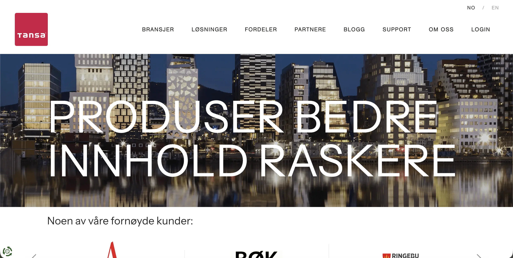
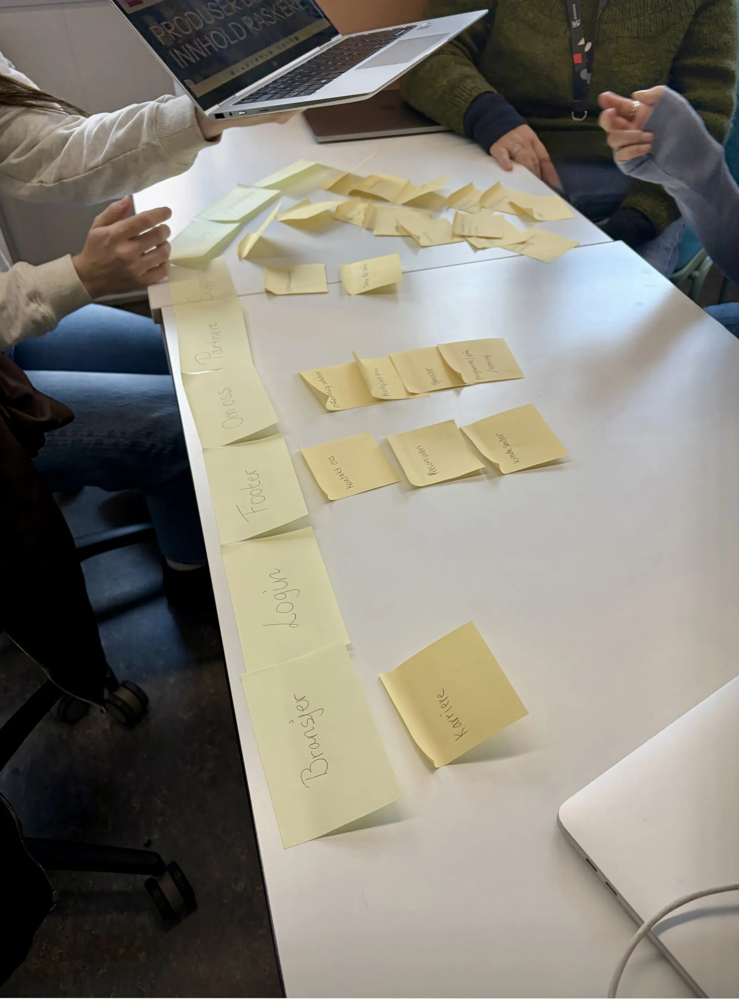
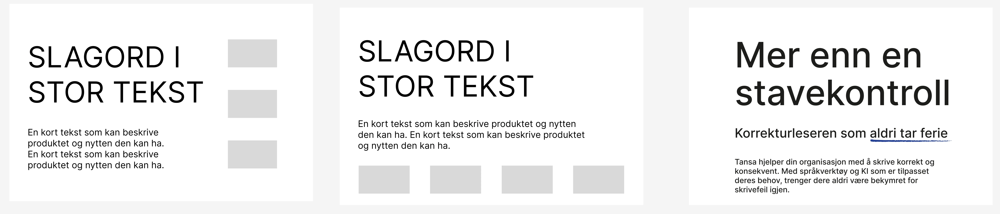
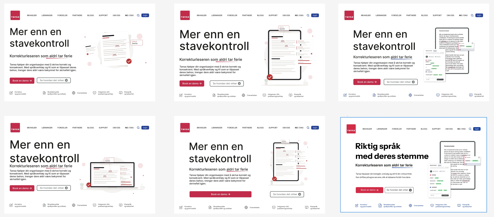
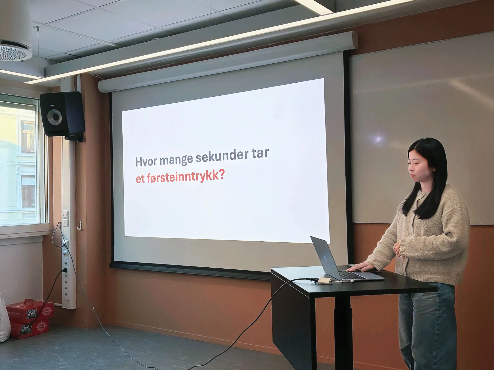

Gruppeprosjekt · Fagskolen Kristiania · Høsten 2026
Tansa
Et tydeligere førsteinntrykk for et sterkt produkt
- Innsiktsarbeid
- Brukertesting
- Informasjonsarkitektur
- UX-design

MIN ROLLE OG BIDRAG
- 5 intervjuer og brukertester
- 2 testrunder
- 0,05 sekunder for et førsteinntrykk
- Ledet innsiktsarbeidet, fra hypotese til hovedfunn
- Utarbeidet intervjuguiden og gjennomførte intervjuer og brukertester
- Kodet transkripsjonene og ledet affinitetskartleggingen
- Fasiliterte en workshop for å gjøre funnene om til idéer
- Ledet og holdt presentasjonen for Tansa
Resultater
- Presenterte konseptet for Tansa og fikk gode tilbakemeldinger
- Rolle
- Innsikts- og presentasjonsansvarlig
- Periode
- 3 uker
- Team
- 4 interaksjonsdesignstudenter
- Verktøy
- Figma, Optimal Workshop, Claude
PROSJEKTET
Tansa er et norsk selskap som lager skreddersydde språkverktøy for redaksjoner og virksomheter i Norge og internasjonalt. Systemet analyserer ord i kontekst og tilpasses hver kundes språk, regler og tone.
Tansa ønsket flere kunder. For å forstå hva det betydde for dem og nettsiden, fulgte jeg opp med spørsmål om mål, kjøpere og salg. Slik fikk vi innsikt i hvem de typiske kundene er, og hvordan et kjøp foregår. Da ble ønskene mer konkrete. Tansa ville nå nye markeder, snakke tydeligere til de riktige målgruppene og få flere til å be om en demo via nettsiden.
Fra Tansa lærte vi at det ofte er ledere som leter etter slike verktøy. Det skjer gjerne når de ansatte etterspør det, eller når organisasjonen trenger det. Derfor designet vi for ledere med ansvar for tekst og språk i virksomheter som produserer mye tekst. Sluttbrukerne påvirker likevel valget, så vi tok også med dem i intervjuene.
Her viser jeg de viktigste stegene i prosessen. Alt materialet, fra research til idéutvikling, ligger samlet i FigJam.
INNSIKT
Første inntrykk og hypotese
Tansa har over 30 års erfaring og kunder over hele verden. Likevel hadde ingen på teamet hørt om selskapet før. Da vi utforsket nettsiden, opplevde vi at den ikke fikk frem hvor sterkt produktet er. Den norske og den engelske versjonen var også svært ulike. Det ga oss hypotesen vår:
Produktet er sterkere enn det nettsiden viser i dag, og det kommer ikke tydelig frem hva produktet er.

Informasjonsarkitektur
Vi laget et sitemap for å få oversikt over alt innholdet på nettsiden og hvordan sidene henger sammen.
Deretter testet vi menystrukturen med en Treejack-test i Optimal Workshop. De fleste deltakerne valgte feil på nesten alle oppgavene. Det viste at kategoriene på nettsiden ikke var lagt opp etter brukernes behov.
Vi gjennomførte også en card sorting med post-it-lapper. Der sorterte vi innholdet på nettsiden i nye kategorier, for å se hvordan menyen kunne vært organisert.

Intervju og brukertest
For å få sammenlignbare data lagde jeg en intervjuguide og et samtykkeskjema for alle deltakerne. Intervjuene kombinerte jeg med brukertester der deltakerne tenkte høyt. Deltakerne var journalister, markedsførere, ledere i offentlig sektor og en eksisterende kunde i et mediehus. Alt ble tatt opp og transkribert i Teams.
Intervjuguiden bygget på tre spørsmål:
- Hvordan oppleves forsiden?
- Forstår besøkende hva Tansa er?
- Hva skal til for at de tar kontakt?
Analyse
Etter intervjuene kodet jeg transkripsjonene med a priori-koding, ut fra hypotesen og nye temaer som dukket opp.

Utsagnene grupperte jeg deretter i temaer gjennom affinitetskartlegging.

Hovedfunn
Analysen ga tre temaer som gikk igjen hos deltakerne.
Uklart førsteinntrykk.
Ingen av deltakerne forsto hva Tansa gjør ut fra forsiden
alene. To av dem trodde det var et KI-verktøy.
«Når jeg bare ser på det som kommer foran meg, forstår jeg ikke hva dette er for noe.»
Mangler troverdige bevis.
Generelle påstander om kunder og tall svekket tilliten.
Deltakerne ønsket navngitte kundesitater med dato, konkret
statistikk og kundecaser.
Det unike er skjult.
Korrekturfunksjonen fikk mest plass. Det som avgjør et kjøp,
som tilpasning, integrasjon og personvern, kom for sent eller ikke
i det hele tatt.
«Jeg tror ikke tusenvis av selskaper velger et produkt fordi spell-checkeren er god.»
Tansa bekreftet selv utfordringen:
«Det vanskeligste er å formidle alt vi kan løse, med få ord.»
Ikke alle funnene pekte i samme retning. Den eksisterende kunden syntes siden stemte med det han visste om Tansa. Men han brukte nettsiden sjelden, og kjente produktet fra før. Det han savnet, var informasjon om integrasjon:
«Hvordan kan det integreres med produksjonssystemet vi allerede har?»
Det er det samme nye kunder ser etter før de ber om en demo.
PROSESS
Fra innsikt til problemstilling
Hovedfunnene gjorde jeg om til How Might We-spørsmål.

Deretter fasiliterte jeg en Crazy 4-workshop i FigJam, der alle skisserte fire idéer på fire minutter. På grunn av kort tid valgte vi å fokusere på ett spørsmål:
Hvordan kan vi få besøkende til å forstå hva Tansa er og hva som gjør det unikt i løpet av få sekunder?
Hvorfor hero-seksjonen
Hero-seksjonen er det første besøkende ser. Forskning viser at et førsteinntrykk av en nettside dannes på rundt 0,05 sekunder (Lindgaard mfl., 2006).
Allerede før testene mistenkte vi at hero-seksjonen var det største problemet. Brukertestene bekreftet det. Det første deltakerne kommenterte, var toppen av forsiden. Bybildet er iøynefallende, men sier ingenting om produktet. Tittelen «Produser bedre innhold raskere» var misvisende, og fikk noen til å tro at Tansa var et KI-verktøy. Den hvite teksten over bildet hadde også dårlig kontrast.
Jeg vurderte også innsats mot effekt. Å endre hero-seksjonen krevde lite tid, men kunne gi stor forskjell. Da vi senere satte opp en innsats-effekt-matrise for veien videre, havnet hero-seksjonen nettopp der: stor effekt og liten innsats.
Low-fidelity
Vi skisserte tre enkle oppsett for å teste ulike komposisjoner. Alle hadde et slagord i stor tekst, en kort forklaring og symboler for Tansas funksjoner.

Fargepalett og budskap
Det var vanskelig å skape blikkfang uten å bruke for mye rødt. Vi utvidet derfor Tansas fargepalett med en elektrisk blå. Vi skrev også en ny tittel basert på innsikten: «Ett språk for hele organisasjonen. Felles skriveregler. Én tydelig stemme.»

High-fidelity og KI
Vi ba Claude om tre forslag til hero-seksjonen som inspirasjon. Ingen av dem traff helt. Vi tok med det vi likte og bearbeidet resten selv, med hvert valg knyttet til innsikten.

Flere deltakere savnet å se selve produktet, og KI-genererte bilder gjorde dem mindre tillitsfulle. Jeg tok derfor initiativ til å be Tansa om bilder av programvaren i bruk. Ut fra dem laget vi en illustrasjon som viser hvordan verktøyet faktisk fungerer.
LØSNINGEN
Den nye hero-seksjonen forklarer hva Tansa er med én gang. Tittelen viser verdien. Teksten under forklarer tilpasning og drift på egne servere. En illustrasjon av programvaren i bruk erstatter det generiske bybildet. Ikoner nederst viser de viktigste funksjonene.
Brukertest av prototypen
Vi testet prototypen med en femsekunderstest. Etter fem sekunder forsto deltakeren at Tansa handler om språk og kommunikasjon. Hun syntes den nye siden forklarte Tansa raskere enn dagens side, og ga den 5 av 5 i troverdighet.
Testen avslørte også at «Book en demo» føltes som en forpliktelse, og at menyen tok for mye oppmerksomhet.
PRESENTASJON
Vi presenterte innsikten og det nye forslaget for Tansa. Jeg ledet presentasjonen og bygde den opp rundt førsteinntrykket: hvor raskt det dannes, hva deltakerne opplevde, og hvordan det nye forslaget løser det.



VEIEN VIDERE
Vi prioriterte de neste stegene i en innsats-effekt-matrise. Vi anbefalte Tansa å starte med det som gir mest effekt for minst innsats:
- En mindre forpliktende demo-knapp, som «Se hvordan det virker»
- Klarspråk på hele siden, særlig i forklaringen av hvordan Tansa bruker KI
- En enklere meny
Vi anbefalte også flere brukertester og bedre kontrast etter WCAG.

REFLEKSJON
Å forbedre et eksisterende produkt er noe annet enn å designe et nytt konsept. Her måtte vi ta hensyn til et selskap med lang historie, eksisterende kunder og tydelige forretningsmål.
Fra praksisen hos Tieto Banktech tok jeg med meg hvor viktig det er å begrunne valgene. I dette prosjektet måtte hvert designvalg kunne knyttes til innsikten. Jeg fikk også bruke forståelsen min av hvor tett UX henger sammen med marked og forretning. Et produkt må vise verdien sin tydelig for å bli valgt. Derfor handlet godt design her like mye om budskap som om layout.
Som innsiktsansvarlig tok jeg mye ansvar for fremdriften. Jeg planla, prioriterte og holdt tempoet oppe når tiden var knapp. Vi delte arbeidet inn i korte faser med faste frister: innsikt, mid-fidelity med brukertest, high-fidelity og presentasjon. Det gjorde at vi kom videre, og at vi kunne gå tilbake og finpusse det viktigste til slutt.
Med mer tid ville jeg testet prototypen med flere deltakere. Runde 2 hadde bare én deltaker, så funnene er en pekepinn og ikke et bevis.